金門閩南語文化夢幻島
教材來源：金門縣政府《金門縣國民小學閩南語教材第十一冊》，PDF共36頁。可搜尋文字為人工整理，完整原稿含台羅與圖像均附頁面供核對；特殊字形以原頁為準。學習目標為編輯整理；測驗及解析為自編練習題。原創3D場景為導覽示意；本機紀念證書非官方認證。
浯島啟航港｜開始文化航旅
歡迎來到金門閩南語文化夢幻島。本站依《金門縣國民小學閩南語教材第十一冊》整理，六座課程島依原六課順序，三個單元活動分別融入風獅日常島、浯洲講古島與團圓迎春島。 推薦路線：水頭洋樓島 → 風獅日常島 → 書香閱覽島 → 明辨寓言島 → 浯洲講古島 → 團圓迎春島。 先選島再點建築讀教材；中央主建築可進入3D備課室。拖曳旋轉室內，點焰兒開教材，轉身點門回外觀。也可以用導覽清單完成閱讀與測驗。
教材宗旨、讀音與閱讀方式
教材以金門在地文化、生活、故事與戲劇，帶領學習語音、語法與語彙。金門腔口、原稿用字與台羅皆以原頁為準，不自行改為其他腔口。 本站逐頁保留36頁完整原稿影像；各課另提供可搜尋的人工文字整理，並非重新審訂版。特殊字形與逐行台羅請用可放大的原頁核對。PDF原文字層有缺字與亂碼，未直接貼用。 資料夾未提供朗讀或聽力音檔，所以目前沒有原版朗讀；背景音樂是手動播放的合成音樂，不是閩南語朗讀。原稿未含工具教學、AI提示詞或外部資源網址，因此不另編造。
進度、練習與紀念證書
每島讀完可標記已讀；每課四題皆為本站自編練習題，附課文依據與解析，不是原教材官方題庫或解答。原稿口說、填空、配對與劇本保留作教材活動，不新增網站學習單。 各課已讀且每課最高分至少75%，即可輸入姓名下載PNG學習完成紀念證書，也可列印。證書僅作學習紀念，非官方認證。 進度與偏好存在你的瀏覽器，可匯出JSON備份並在同站匯入合併；保留最高分。本站不把姓名或進度自動上傳。
編輯界線與原稿異寫
第24頁課名為「開浯恩主陳淵」，第24–29頁課文及劇本寫「陳洲」。兩者原樣保留並支援檢索；不擅自統一。故事依「講古」「相傳」的語境呈現，不等同本站完成歷史考證。 部分頁腳誤顯示「3」，來源定位統一採PDF實際頁序1–36。原稿練習未附完整解答，不將自行推定內容稱為官方答案。 網站地標、具名島民與焰兒為原創導覽示意，並非金門真實建築的測繪模型或真人講師。學習目標及因果閱讀提示為編輯整理。
出版資訊與製作人員（第36頁）
書名：金門縣國民小學閩南語教材第十一冊。 發行單位：金門縣政府；發行人：陳福海。 編譯（臺羅拼音）：鄭海派；繪圖：劉伯樂。 出版日期：中華民國103年3月；再版日期：中華民國115年7月。 ISBN：978-986-04-0580-4；GPN：1010300313。 完整編輯顧問、總督導、總策劃、總編輯、執行主編、作者群、編輯群、錄音與校對名單、出版聯絡資訊，原樣保留於下方第36頁。 本網站未提供新的真人講師介紹或肖像，也不以出版者與作者群為網站背書。
原稿逐頁對照｜台羅、插圖與原練習
以下完整保留原稿頁面，含逐行台羅、特殊用字、插圖、表格與原練習。點圖可開新分頁放大；可搜尋正文為人工文字整理，讀音與細字請與原頁核對。頁序依PDF，不依異常頁腳。
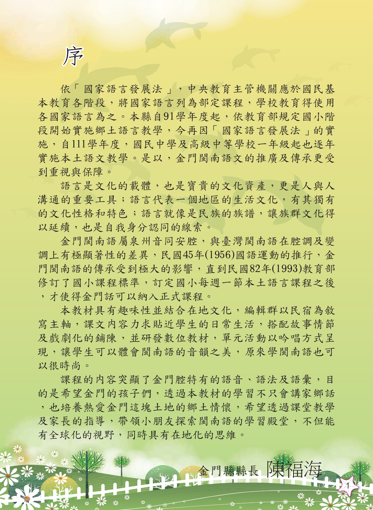
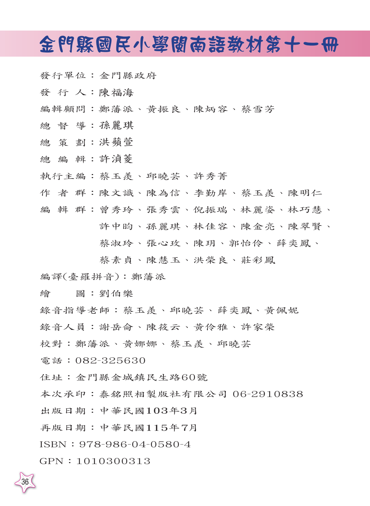
1. 水頭洋樓島
走進水頭聚落，看見番仔樓與閩南厝的文化。
學習目標（編輯整理）：能說明水頭聚落建築特色，辨識課文詞語並理解地方俗語。
第一課｜有水頭富 無水頭厝（第4–5頁）
人講：「有水頭富，無水頭厝。」若無親身行一逝，真正毋知影水頭厝是遮爾仔媠。水頭是一個港口，早時，欲去大陸做生理，抑是落番拍拚，攏嘛著從遮咧起落。 水頭人出外拍拚趁大錢，攏會共錢寄倒來起大厝、起學堂，造福鄉里。水頭厝第一奇巧的所在，就是有媠噹噹的番仔樓佮傳統的閩南式大厝；親像頂界的十八支樑，中界的得月樓，攏誠出名。 除了徛家以外，閣有清朝乾隆三十一年完成的私塾「酉堂別業」；民國二十年起的金門第一座新式學堂「金水學堂」。所以，水頭猶閣有「文里鄉」的好名聲。 毋管是閩南式傳統建築，抑是中西合璧的番仔樓，行踏其間，攏會予人呵咾伊一聲「讚」，無想欲離開。所以，有一句「三日無火熏，欲看水頭村」的俗語話佇民間流傳。 文字依頁面整理；「徛家」等原字形與逐行台羅以本島完整原頁為準。
快譯通｜詞語與俗語（第5頁）
生理：生意。 起落：上下、來往之意。 奇巧：罕見、別緻的事物。 行踏：進出、走動。 三日無火熏，欲看水頭村：寧可餓肚子，也要到水頭欣賞精美的建築，表示對水頭建築的極度讚賞。
寫看覓、講看覓與建築連線（第6–7頁）
原活動：請共較適當的語詞，寫入空格內，而且唸予逐家聽。 語詞組：知影／影跡／無影；一行／一逝／一擺；拚命／拍拚；起／存／講／讚；新噹噹／清氣沽沽／媠噹噹。 句子依原頁保留，包含水頭馬倉、親身行踏、作穡拍拚、嫁妝與新娘的情境。 原活動「我會曉連看覓」：將三塌壽、出龜、五跤基的建築構造與三張洋樓照片連線。圖片及標籤完整保留於原頁，照片署名「林建育先生提供」。 以上為原稿活動，並非網站新增學習單；未提供官方解答。
教材的語言與來源（第1、36頁）
序文指出，金門閩南語在腔調與聲調上有自己的特色；教材結合在地文化、日常生活、故事及戲劇，以語音、語法及語彙為學習內容。本站以金門原稿為讀音與用字依據。 教材書名：金門縣國民小學閩南語教材第十一冊。發行單位：金門縣政府。發行人：陳福海。編譯（臺羅拼音）：鄭海派。繪圖：劉伯樂。完整作者群與製作人員見中央島第36頁。 出版日期：民國103年3月；再版日期：民國115年7月。出版者與作者群為原教材來源，不代表本網站講師或官方認證。
原稿逐頁對照｜台羅、插圖與原練習
以下完整保留原稿頁面，含逐行台羅、特殊用字、插圖、表格與原練習。點圖可開新分頁放大；可搜尋正文為人工文字整理，讀音與細字請與原頁核對。頁序依PDF，不依異常頁腳。
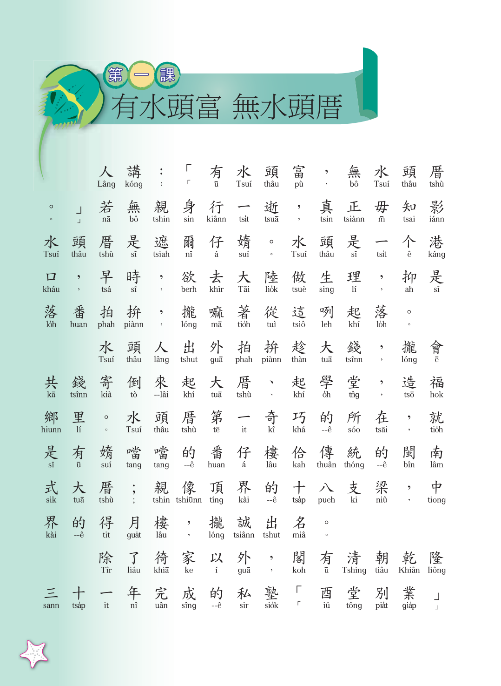
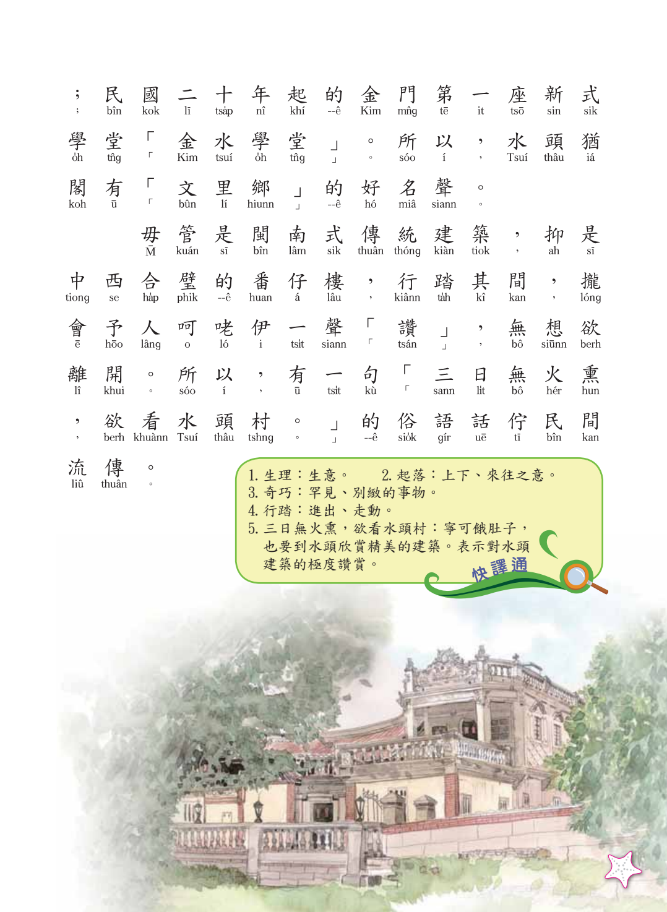
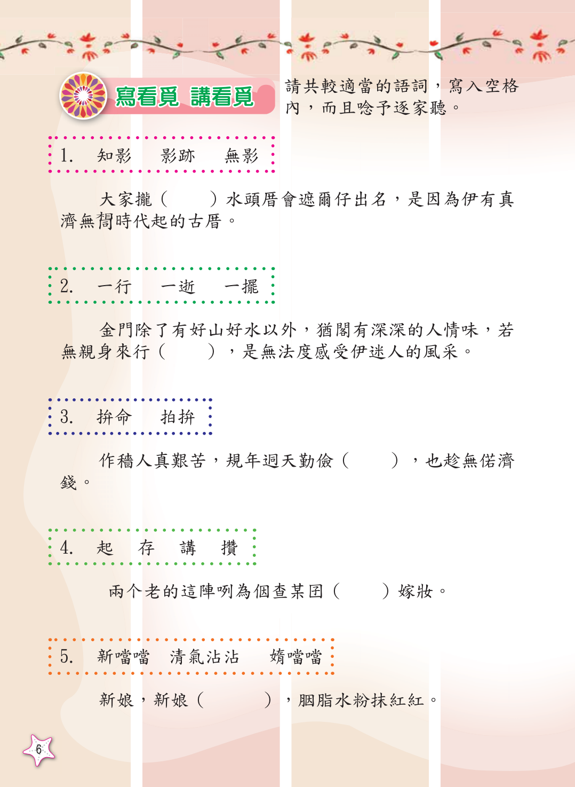
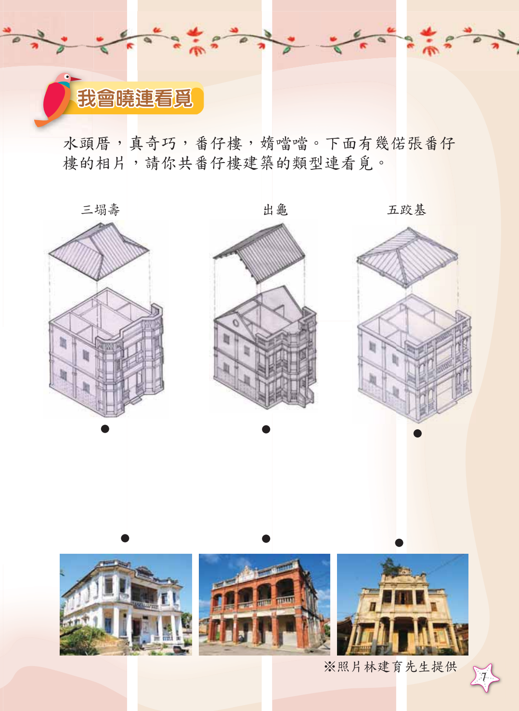
自編練習題
水頭人將在外打拚所得寄回家鄉，課文提到的用途是什麼？
- 只用來買船
- 興建大厝與學堂，造福鄉里
- 只作個人旅行費
- 拆除所有傳統建築
正確答案：興建大厝與學堂，造福鄉里
第4頁寫到寄錢回來起大厝、起學堂，造福鄉里。
「三日無火熏，欲看水頭村」在課文中表達什麼？
- 對水頭建築的極度讚賞
- 要求大家不吃飯
- 水頭禁止生火
- 每三天必須搬家
正確答案：對水頭建築的極度讚賞
第5頁快譯通解釋這是讚賞水頭精美建築的俗語，不是生活命令。
課文中的「生理」是什麼意思？
- 身體構造
- 學校課表
- 生意
- 風向變化
正確答案：生意
第5頁快譯通將「生理」解釋為「生意」。
哪一組最符合課文描述的水頭建築？
- 全部為現代摩天樓
- 只有茅草屋
- 只有工廠
- 番仔樓與傳統閩南式大厝
正確答案：番仔樓與傳統閩南式大厝
課文同時提及中西合璧的番仔樓及閩南式傳統建築。
2. 風獅日常島
從風颱天的家庭故事，走到昨日、今仔日與明仔日。
學習目標（編輯整理）：能理解颱風敘事、動作與量詞，運用時間詞說明生活行程。
第二課｜風颱天（第8–9頁）
電視新聞一直播，講下晡風颱欲來。學堂食過下晝了後，就提早放暇矣！ 我佮爸爸趕緊去后浦買食食，攢蠟燭佮電塗，媽媽用大奇水桶貯水，親像咧欲拍戰按呢！ 風杏仔大起來，爸爸趕緊巡門窗，看有關好無！巡水溝，看有予塞牢無？差不多下昏七點外，風咻咻叫，雨水若用潑的，樹仔搖來搖去，窗仔門予風搧甲乒乓砰叫，實在真驚人。 連鞭時煞停電，規厝暗眠摸，我趕緊用拍火機共蠟燭點起來，微微仔的光線，佮外口咧雷公爍爁，形成誠強烈的對照。 這个時陣，我才知影大自然的力量是袂用得按算的！ 這是原課文的生活敘事；本站未將其中用品或行為改寫為現行防災操作指引。特殊用字及台羅請對照原頁。
快譯通與原詞語練習（第9–11頁）
快譯通：攢＝準備。奇＝數量用詞，例如「一奇桶仔」。雷公爍爁＝形容打雷閃電的情景。 第10頁原活動：從「搧、貯、點、拍、掀、捧」選詞，搭配風、火、旗、手、水、書；看圖填量詞，選項為「扇、枯、葩、幅、奇、捻」，圖片包括水桶、香蕉、門、圖、電火與中藥。 第11頁「我會曉寫」：依拼音寫漢字與語意。例 pàng-hē＝放暇＝放學；其餘拼音 liâm-mi-sî、tsia̍h-sit、taùh-taùh-á、sih-nà 保留原頁供核對。 原「閩南語顛倒話」請寫出後退、習慣、情感、牲畜、客人、熱鬧、介紹所對應的閩南語，並想其他例子。原稿沒有完整解答本，開放活動不自動判分。
單元活動一｜昨日 今仔日 明仔日（第12–13頁）
昨 日 你 去 佗？ 昨 日 我 去 后 浦 看 做 醮； 昨 昨 日 你 去 佗？ 昨 昨 日 我 佇 門 口 曝 棉 被。 落 昨 昨 日 你 去 佗？ 落 昨 昨 日 我 去 菜 園 挽 茄。 明 仔 日 欲 物 代？ 明 仔 日 欲 去 花 市 買 盆 栽。 後 日 欲 物 代？ 後 日 欲 去 菜 市 買 王 梨。 落 後 日 欲 物 代？ 落 後 日 阮 兄 娶 某，欲 做 總 招 待。 昨 日，今 仔 日，明 仔 日，日 子 一 目 睭 仔 溜 溜 去，若 像 日 生 翼，來 無 聲，去 無 影。 把 握 今 仔 日，昨 日 不 可 留； 身 心 著 勇 健，一 生 免 憂 愁。 原稿逐行台羅與字形保留於原頁；本活動練習過去與未來時間詞及問答。
原稿逐頁對照｜台羅、插圖與原練習
以下完整保留原稿頁面，含逐行台羅、特殊用字、插圖、表格與原練習。點圖可開新分頁放大；可搜尋正文為人工文字整理，讀音與細字請與原頁核對。頁序依PDF，不依異常頁腳。
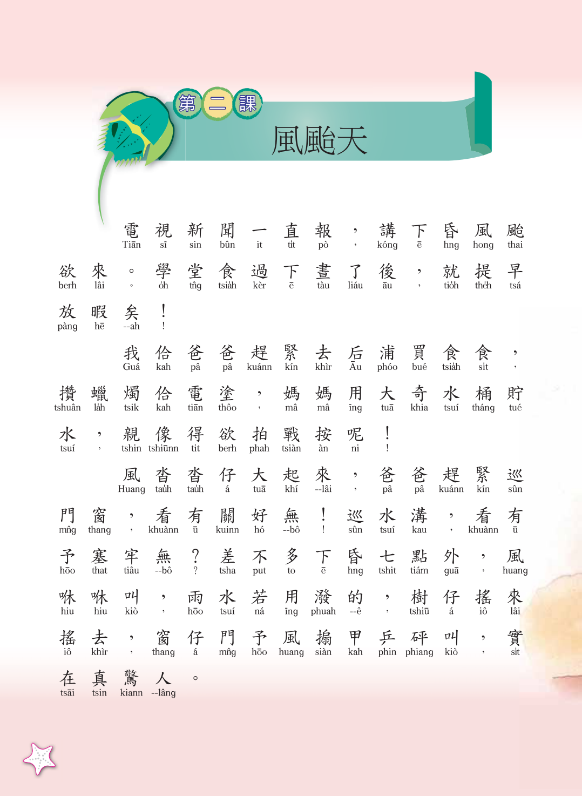
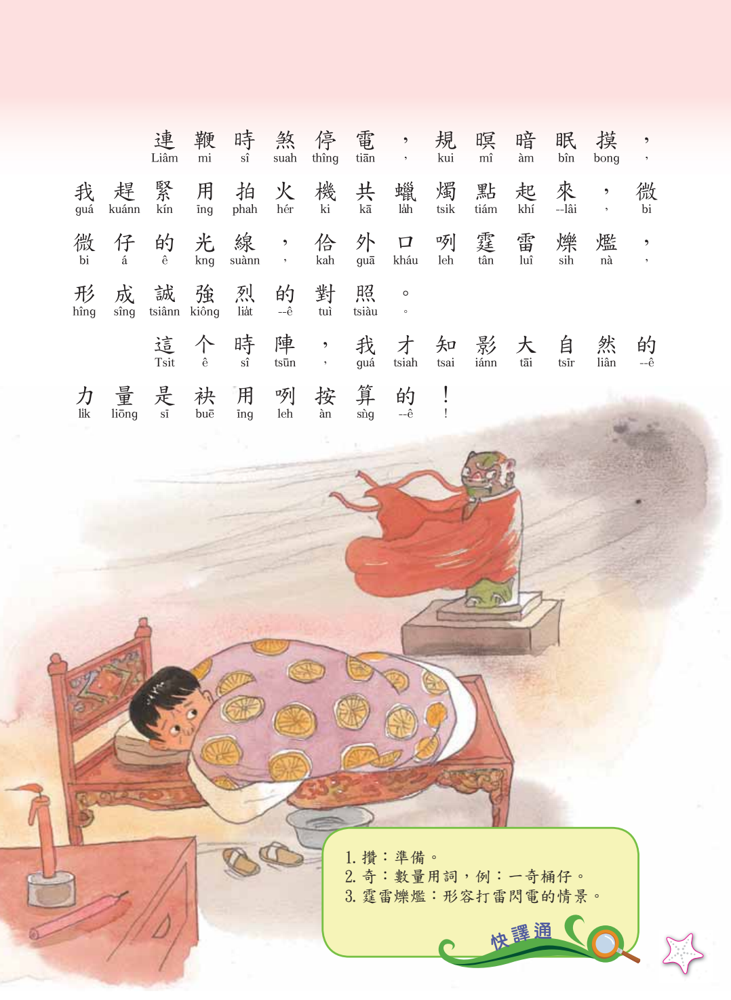
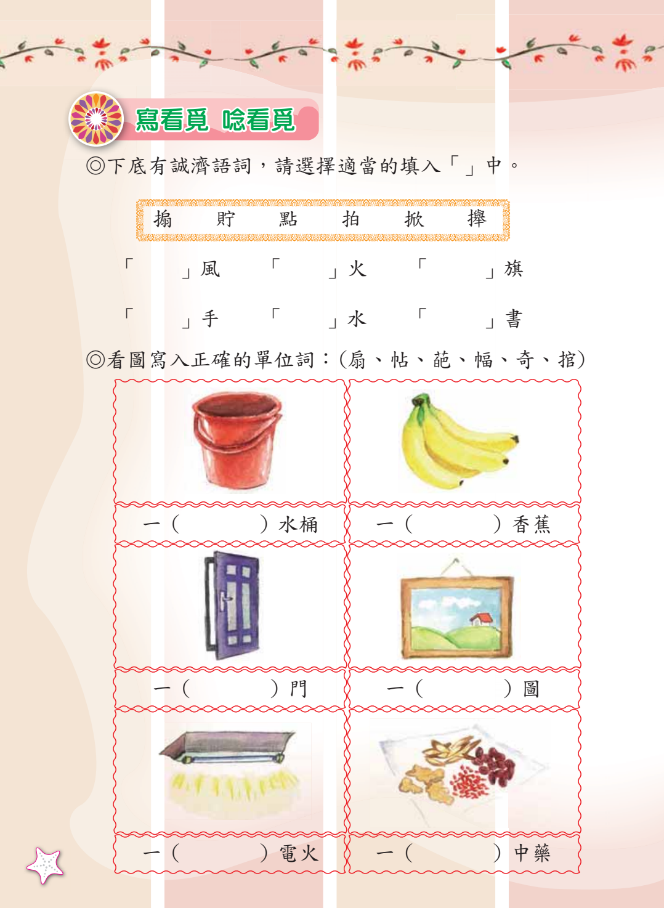
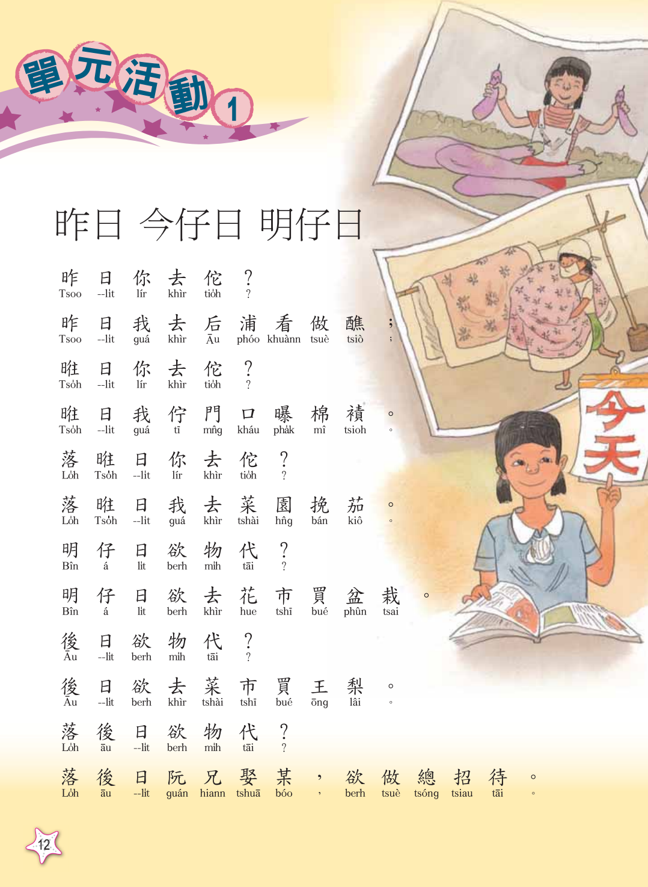
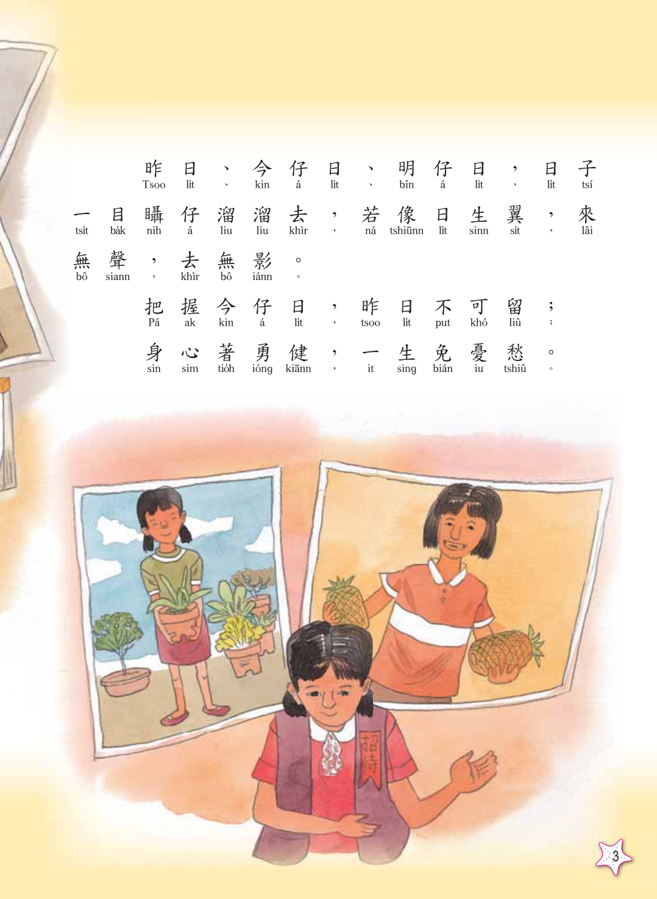
自編練習題
課文中，爸爸在風雨變大時巡查了什麼？
- 只有書包
- 門窗與水溝
- 只有鞋子
- 只有餐桌
正確答案：門窗與水溝
第8頁描述爸爸巡門窗、查看是否關好，並巡水溝是否堵塞。
「攢」在快譯通中的意思是什麼？
- 準備
- 離開
- 睡覺
- 忘記
正確答案：準備
第9頁快譯通寫「攢：準備」。
課文最後強調什麼？
- 人一定能完全控制風雨
- 颱風只是遊戲
- 大自然的力量難以估量
- 停電不會影響生活
正確答案：大自然的力量難以估量
敘事結尾寫到大自然的力量「袂用得按算」。
〈昨日 今仔日 明仔日〉結尾鼓勵哪種態度？
- 只懷念過去而不行動
- 每天等別人安排
- 所有事情都留到明天
- 把握今天並保持身心健康
正確答案：把握今天並保持身心健康
第13頁以把握今仔日、身心著勇健作結。
3. 書香閱覽島
跟著阿強與妹妹進圖書館，練習輕聲、愛書與好好表達。
學習目標（編輯整理）：能理解閱讀禮儀，辨識適切行為並使用禁止、勸告與時間句型。
第三課｜來去圖書館（第14–15頁）
拄仔開學一禮拜，天氣猶閣熱滾滾。拜六下晡，爸爸帶我佮小妹去圖書館。欲入門以前，爸爸一直交代：袂使大聲嚷、袂使飆滾、毋通拆破書……。 阿強：喔，爸爸！我攏知啦！老師有教過。 爸爸：知好，若無，你講來聽看覓咧！ 阿強：是！爸爸，請聽我講：講話著輕聲細說、環境保持清氣、毋通從來從去、毋通食物件、拖椅仔著愛輕輕仔……。 爸爸：猶閣有咧！ 妹妹：我講，我講！袂使佇書面頂畫烏摖白，書看完著囥佇原位。 爸爸：恁講甲誠好！ 入去圖書館，內面的人攏誠專心咧看書，逐家攏靜寂寂，我就揣一本故事書來看，妹妹看尪仔冊，爸爸看報紙，一直到日欲暗仔，才心滿意足離開。 對話角色、特殊用字與逐行台羅均保留原頁供比對。
快譯通｜語詞（第15頁）
熱滾滾：形容非常的炎熱。 飆滾：嬉戲。 從：慌亂奔跑。 畫烏摖白：隨意塗鴉。
原活動｜行為辨別與句型（第16頁）
原活動「我會曉分辨」：佇圖書館內，對的行為請畫O，不對的行為請畫X。 食物件；覕相揣；靜寂寂看書；從來從去；輕輕拖椅仔；借書倒去看；慢慢的行路；佇書面頂寫字。 原活動「我會曉寫」：根據內容填入語詞完成句子。 句型一：……袂使……毋通…… 咱若入去圖書館，袂使（ ），毋通（ ），按呢才算是一個有水準的讀者。 句型二：……一直到……才…… 阿媽誠愛看書，每一擺（ ）的時陣，伊干但像胡蠅沾著肉砧相款，一直到（ ）才（ ）。 以上保留為原稿開放活動，不作官方答案判定。
原活動｜名詞與形容詞（第17頁）
連看覓：將適當的形容詞與名詞連起來。 名詞：教室、皮膚、喙唇、面色、日頭、紙字、檸檬、衫褲、烏骨雞。 形容詞：靜寂寂、紅支支、酸剾剾、花碌碌、白蒼蒼、烏趖趖、熱滾滾、青恂恂、新簇簇。 講看覓：在外口炎熱、檸檬口感、面色與衫褲等情境，選適當語詞填入並說出完整句子。精確字形、配列及拼音見原頁。
原稿逐頁對照｜台羅、插圖與原練習
以下完整保留原稿頁面，含逐行台羅、特殊用字、插圖、表格與原練習。點圖可開新分頁放大；可搜尋正文為人工文字整理，讀音與細字請與原頁核對。頁序依PDF，不依異常頁腳。
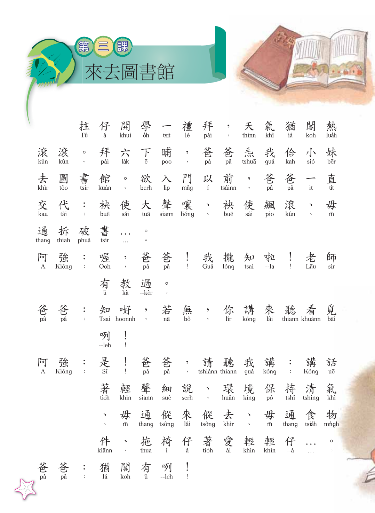
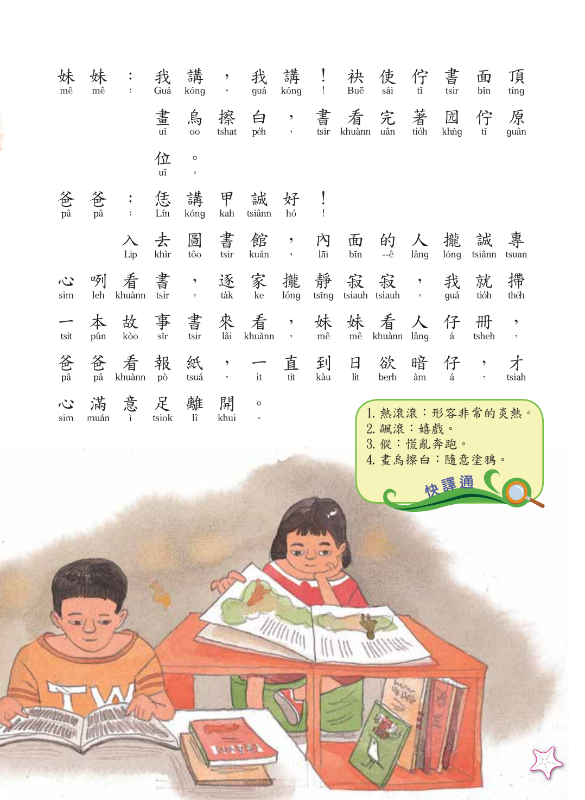
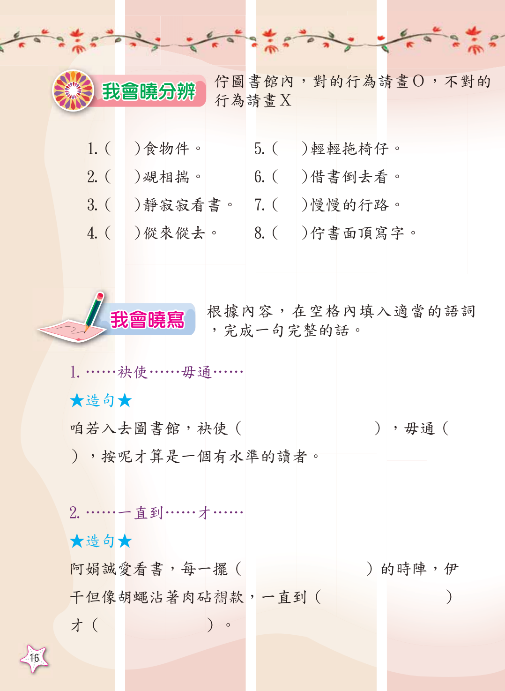
自編練習題
妹妹提醒看完書以後應該怎麼做？
- 藏到椅子下
- 在封面畫畫
- 放回原位
- 任意丟在地上
正確答案：放回原位
第15頁妹妹說「書看完著囥佇原位」。
下列哪一項符合課文中的圖書館禮儀？
- 大聲追逐
- 輕聲說話並保持環境清潔
- 邊跑邊吃
- 拆破借來的書
正確答案：輕聲說話並保持環境清潔
第14頁阿強提到輕聲細說及保持清氣。
「一直到日欲暗仔，才心滿意足離開」主要表達什麼？
- 離開發生在天色將暗時
- 一進館就離開
- 大家完全沒看書
- 圖書館只有夜間開放
正確答案：離開發生在天色將暗時
這句用「一直到…才…」表達持續閱讀至接近天黑才離開。
課文的「袂使」「毋通」用在什麼情境？
- 列出食物名稱
- 表達顏色深淺
- 安排過年菜色
- 提醒不應做的行為
正確答案：提醒不應做的行為
爸爸與孩子以這些語詞提醒不應大聲、奔跑及破壞書本。
4. 明辨寓言島
在虎與狐狸的故事裡，看見表象背後的原因。
學習目標（編輯整理）：能說明寓言因果，辨識借勢行為並練習條件句與俗語。
第四課｜傍官靠勢（第18頁）
佇樹林內，所有的動物上驚去拄著虎，若是無細膩，一定會無命。 有一日，虎掠著一隻狐狸。狐狸講：「你才毋通食我，我是天公伯仔派來管理所有的動物，這陣你若共我拆食落腹，就是違反天理，你若毋相信，我行頭前，你綴尾後，看是毋是個個會走甲無後跤！」 虎想想咧，感覺有淡薄仔道理，就綴佇狐狸的後壁行，所有的動物看著虎，就三步走、兩步跳，趕緊走去覕，虎毋知影逐家是咧驚伊，煞準咧驚狐狸呢！ 咱做人一定著用腦筋好好仔思考，毋通像虎按呢憨憨戇。
快譯通與故事因果（第19頁）
拆食落腹：生吞活剝。 淡薄仔：一點點。 掠準：以為。 憨憨戇：愚蠢。 走甲無後跤：逃得無影無蹤。 閱讀整理：動物看到的是跟在狐狸後面的虎，因害怕虎而逃走；虎誤把這個反應當成大家害怕狐狸。這項因果整理依第18頁課文，供理解故事。
原活動｜拼音、條件句（第20頁）
原「我會曉寫」：依 suè-lī、tām-po̍h-á、āu-piah、tsai-iánn 的拼音，從課文找漢字並寫語意；精確台羅依原頁。 句型：若是……，一定會……。 三個原情境為考試前的準備、外口風雨很大，以及電影六點開始。 原提供語詞：無好好準備、袂赴矣、考無好、傷晏入去、袂記咧帶雨傘、沃甲澹漉漉。 依情境完成句子並口說，沒有附官方解答本。
原活動｜閩南語俗語與華語成語（第21頁）
閩南語俗語： 甲 狗吠火車 乙 一時風，駛一時船 丙 惜花連盆，疼囝連孫 丁 六月芥菜假有心 戊 倚懸山，看馬相踢 己 頭仔燒燒，尾仔冷冷 庚 狗聲乞食喉 辛 講一个影，生一个囝 華語成語選項：A虛情假意；B捕風捉影；C五音不全；D螳臂擋車；E虎頭蛇尾；F見風轉舵；G隔岸觀火；H愛屋及烏。 原稿示範「甲」佮「D」。其餘保留原配對活動，台羅及原字形見完整原頁。
原稿逐頁對照｜台羅、插圖與原練習
以下完整保留原稿頁面，含逐行台羅、特殊用字、插圖、表格與原練習。點圖可開新分頁放大；可搜尋正文為人工文字整理，讀音與細字請與原頁核對。頁序依PDF，不依異常頁腳。
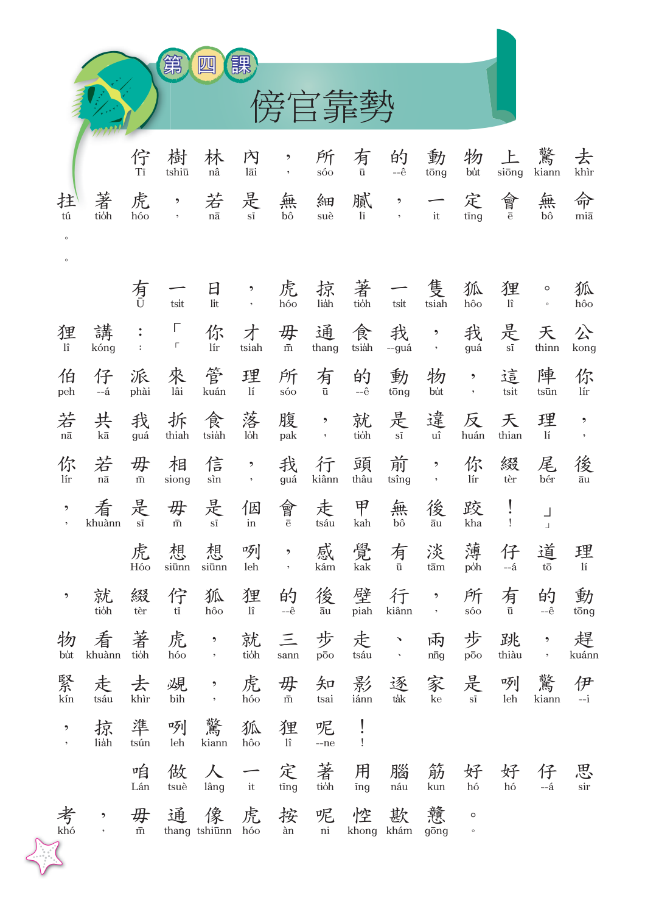
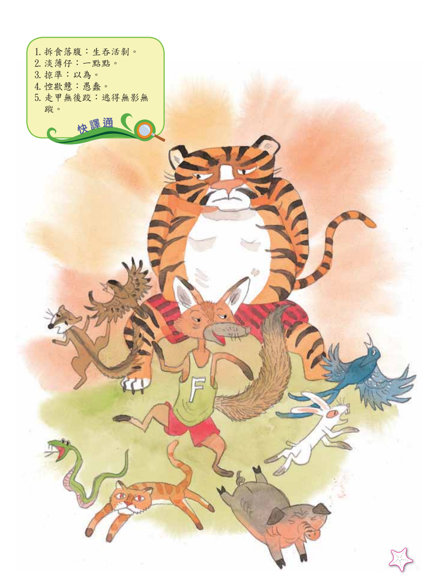
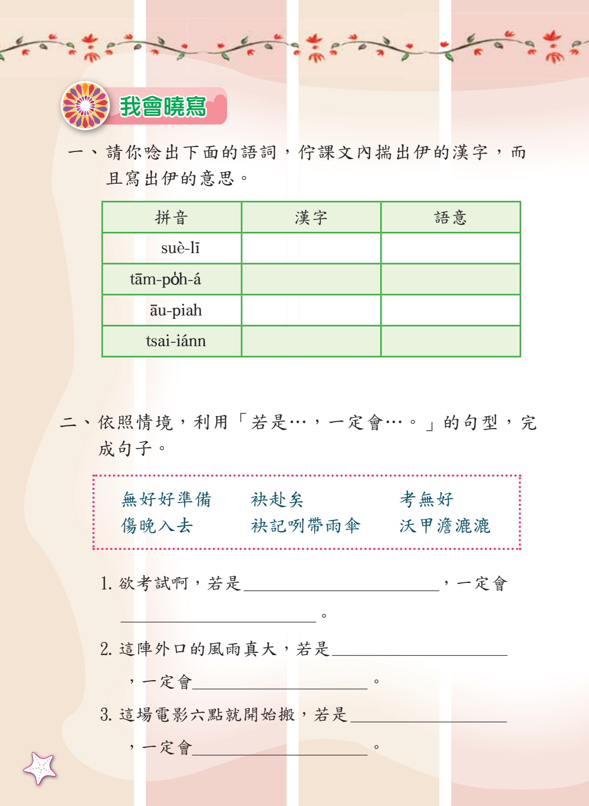
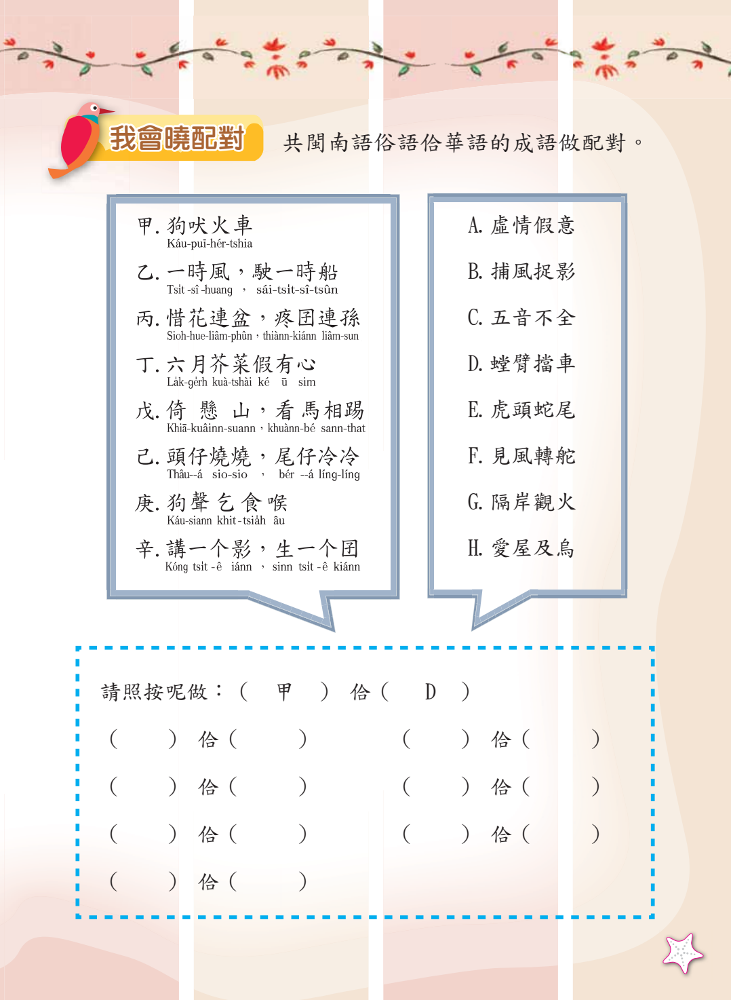
自編練習題
動物們看到狐狸和虎時逃跑，主要原因是什麼？
- 害怕狐狸的帽子
- 害怕後面的虎
- 趕著去上課
- 不喜歡樹木
正確答案：害怕後面的虎
第18頁明說動物是害怕虎，虎卻誤以為大家在害怕狐狸。
虎對動物逃跑的反應犯了什麼判斷錯誤？
- 把害怕虎誤認為害怕狐狸
- 完全沒有看到其他動物
- 以為狐狸在睡覺
- 以為森林沒有動物
正確答案：把害怕虎誤認為害怕狐狸
故事的核心是虎錯認了其他動物逃跑的原因。
課文結尾鼓勵讀者如何處理事情？
- 只看表面就決定
- 永遠依靠聲勢
- 用腦筋好好思考
- 凡事不必確認
正確答案：用腦筋好好思考
結尾提醒做人要用腦筋好好思考，不要像故事裡的虎。
「若是……一定會……」較適合練習哪一種關係？
- 物品與顏色
- 姓名與筆畫
- 地名與方向
- 條件與可能的結果
正確答案：條件與可能的結果
第20頁以準備考試、風雨及電影時間等情境練習條件與結果。
5. 浯洲講古島
聽阿隆伯仔講古，再用角色表演與地方語彙認識浯洲。
學習目標（編輯整理）：能區分故事中的傳說語境，理解敘事順序並以角色和地方語彙表達。
單元活動二｜戴招飄 摎洞葛（第22–23頁）
金門話，誠趣味， 巴剎是菜市， 雪文是油衣， 亭仔跤叫做五跤基。 約量叫阿合， 巴突是合理， 合意叫舒合， 政府號做公班衙。 ＊＊＊ 嘻！今仔日，好天氣， 伯公戴招飄，摎洞葛， 行過五跤基，去巴剎， 買干冬，煮咖哩， 一家大細食甲笑微微！ 原活動題名及地方用字照原頁保留；本島不自行替換腔口或增補詞源考證。
第五課｜阿隆伯仔講古－開浯恩主陳淵（第24–27頁）
晉朝的時陣，天下大亂，中原的老百姓誠歹過日子，有誠濟人走來浯洲避禍，起先有蘇、陳、吳、蔡、呂、顏六个字姓。 唐朝的時陣，牧馬監陳洲帶伊的部下、佮民戶十二个字姓來浯洲飼馬。伊教百姓開墾山林、種作五穀，奠定開發的基礎。 相傳陳洲是「馬祖」下凡，伊飼馬有方法，雖然群馬滿山四界走，但是只要站旗、拍鼓作號令，所有的馬攏會自動集中佇各色旗的旗竿下。 伊劭飼馬，醫術嘛一粒一，毋若為馬醫病，嘛為百姓治療各種雜症。伊過身了後，百姓誠感念伊，就造像、起廟來紀念伊。伊有幾若擺顯聖，共海賊佮強寇趕走，保護百姓的安全。 有一个查某囡仔看著主公的座像誠緣投，猶閣崇拜伊的恩德，就跪咧拜，希望有機會佇伊的身邊兜來奉侍，無想著一下拜完，煞上天做佛去，信眾也為伊站一身座像佇主公身邊，尊稱伊是「助靈夫人」。 原稿異寫：課名寫「陳淵」，課文與劇本寫「陳洲」，本站保留兩者。以上內容依原稿講古與「相傳」的語境呈現，並非新增歷史考證。精確特殊字形及台羅以原頁為準。
快譯通（第24頁）
站：豎立。 旗竿：懸掛旗子的長杆。 過身：過世、死亡。 強寇：強盜。 原稿讀音與字形保留於原頁。
我會曉演｜第一幕與第二幕（第28頁）
下底是課文改寫出來的劇本，請恁分組練習表演，最後佇逐家面頭前演出，看底人上勞搬！ 第一幕 口白：晉朝的時陣，天下大亂。 路人甲：哎呀，這陣時機誠亂，中原的日子歹過，是欲按怎過日子？ 路人乙：聽講浯洲彼所在治安較好，攏無戰爭，無，咱搬來去彼生活。 路人甲：好啊！好啊！ 口白：繼落來，就有姓蘇、姓陳、姓吳、姓蔡、姓呂佮姓顏的人搬來浯洲避亂。 第二幕 口白：唐朝的時陣，有一個牧馬監，叫做陳洲，伊帶部下佮十二个字姓的人來浯洲。 陳洲：各位，咱欲佇這塊土地生活，著愛想辦法發展，我看這所在適合飼馬，有的人會使作穡種五穀，予逐家食食無煩惱，生活較輕可。 士兵甲、乙、丙：好！（那行到邊仔，那開講） 士兵甲：你看，陳洲飼馬真有方法，一群馬佇山頭從來從去，伊一拍鼓、站旗，所有的馬攏乖乖仔自動集合佇各色旗的旗竿下。 士兵乙：精實厲害，難怪逐家攏尊稱伊是「馬祖」。
我會曉演｜第三幕與角色分配（第29頁）
士兵丙：伊毋但敖飼馬，醫術嘛足好的，醫好足濟人的病，逐家攏尊重伊。 第三幕 口白：伊過身了後，百姓起廟造像祭拜。聽講佇元朝的時陣，強寇入侵，是陳洲顯靈共個趕走，逐家攏感念伊，尊稱伊是「恩主公」。有一日，一个妝媠仔來的查某囡仔行到恩主公廟內。 查某囡仔：哇，恩主公的神像誠緣投，伊的功勞閣遮爾大，若是有機會佇伊身邊奉待伊，按呢毋知有偌好！（跪下做膜拜狀） 口白：這時陣，查某囡仔煞上天做佛去，信眾也為伊站像，尊稱伊是「助靈夫人」。 角色分配：口白、路人甲、路人乙、士兵甲、士兵乙、士兵丙、查某囡仔。原劇本第二幕另有陳洲發言，但末頁角色分配欄未列陳洲；表演時可另安排該角色或由口白兼讀，這是活動安排建議，不修改原劇本。
原稿逐頁對照｜台羅、插圖與原練習
以下完整保留原稿頁面，含逐行台羅、特殊用字、插圖、表格與原練習。點圖可開新分頁放大；可搜尋正文為人工文字整理，讀音與細字請與原頁核對。頁序依PDF，不依異常頁腳。
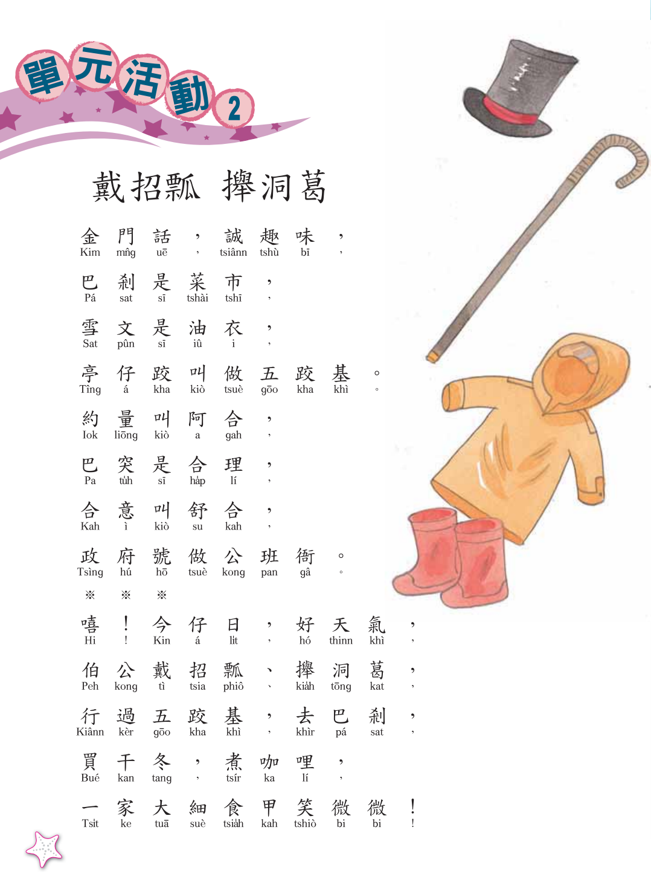
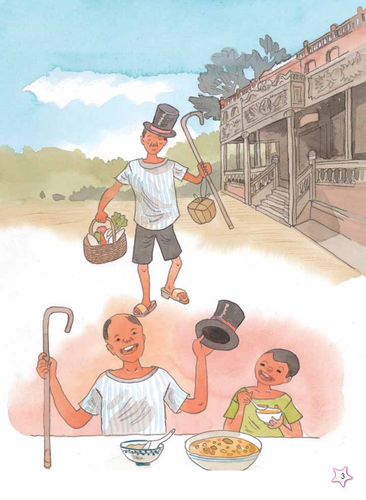
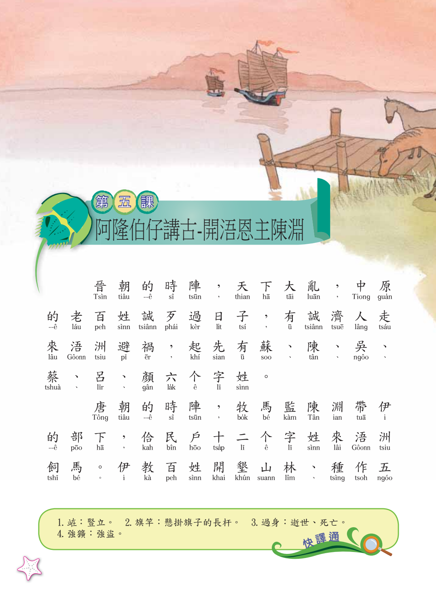
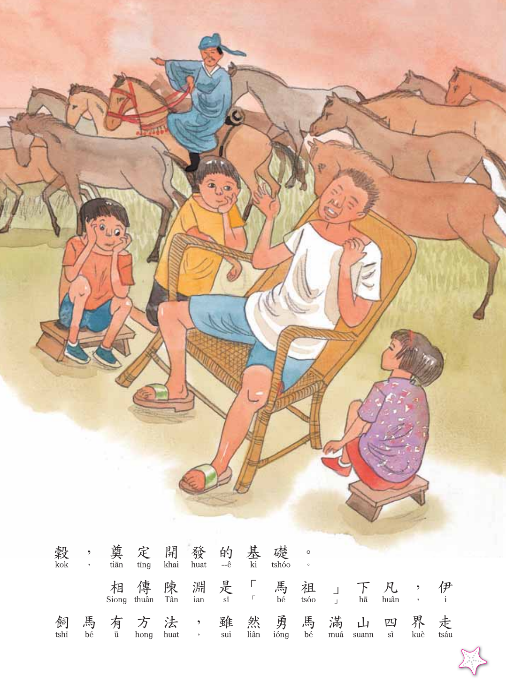
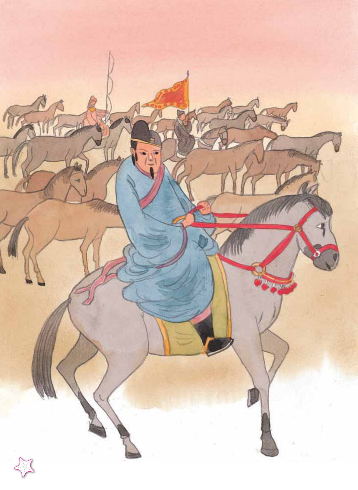
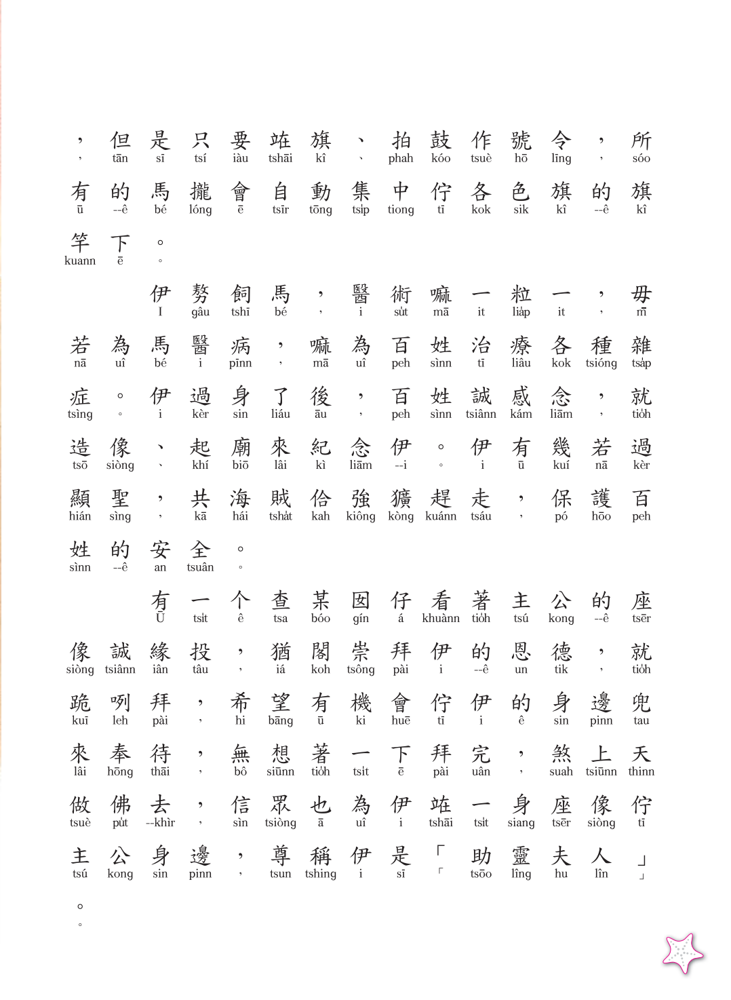
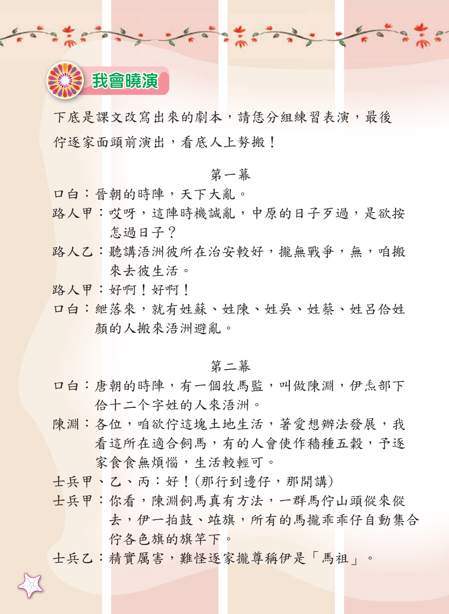
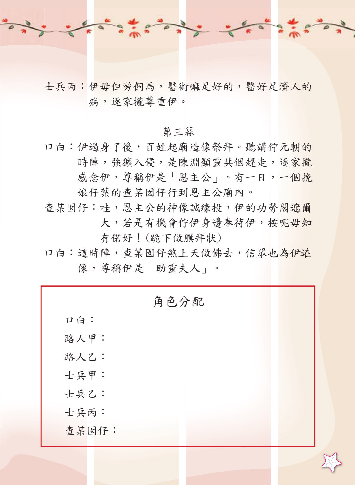
自編練習題
課文描述陳洲如何讓四處走動的馬集合？
- 熄燈睡覺
- 把書放回原位
- 站旗並拍鼓作號令
- 每次換一座島
正確答案：站旗並拍鼓作號令
第25–27頁敘事說站旗、拍鼓後，馬集中在各色旗的旗竿下。
課文以「相傳」介紹馬祖下凡，閱讀時應如何理解？
- 這是原稿的地方傳說語境
- 這是本站新增的科學實驗
- 每句都是本站完成的歷史考證
- 表示故事完全沒有文化價值
正確答案：這是原稿的地方傳說語境
本站保留講古與相傳的語境，不把它改成已考證史實。
依第22頁原文，「巴剎」指的是什麼？
- 圖書館
- 菜市
- 旗竿
- 燈塔
正確答案：菜市
單元活動原句是「巴剎是菜市」。
第三幕提到信眾為女子立像，尊稱她為什麼？
- 風獅爺
- 金水學堂
- 馬祖
- 助靈夫人
正確答案：助靈夫人
第29頁劇本最後說信眾為她立像，尊稱「助靈夫人」。
6. 團圓迎春島
從掃除、門聯到圍爐，說出金門年節裡的團聚與祝福。
學習目標（編輯整理）：能敘述年節活動順序、辨識飲食祝福，理解團聚與環境關懷。
第六課｜二九暝食團圓飯（第30–31頁）
過年前的一禮拜外，阮規家伙仔攏誠無閒，先挩塵共厝內拚掃清氣，繼落來媽媽佮阿姊去后浦買年貨，我鬥牽聯紙，予爸爸寫門聯。 一晃就年兜仔！門聯貼好，爸爸開車去機場接俺公佮俺媽。下晝祖廳的八仙桌排甲滿滿是的菜碗佮金紙，講欲拜列代祖先。 下昏晚就是圍爐團圓的時陣，桌頂架一个火鍋，有白菜、紅菜頭、豆腐、魚圓、肉圓、貢丸、芋炸等的火鍋料，猶閣有攢紅燒魚、封肉、蝦炸、蚵仔炸、蒜仔炒肉摻炒青菜，規塊桌強欲排袂落去。 俺公佮俺媽坐好了後，逐家著圍倚來。柔軟的燈光，燒滾滾的菜湯，歡樂的笑聲，規間厝充滿幸福的滋味。這情景真正是：「天增歲月人增壽，春滿乾坤福滿堂。」 原稿標題及金門特殊用字保留；逐行台羅和完整插圖見原頁。
快譯通與排序活動（第31–32頁）
挩塵：農曆年前的大掃除，象徵除舊布新。 乾坤：天地。 原「排看覓」：下底有四張圖，請根據代誌發生的先後，在方格內填入1、2、3、4。原圖完整保留；可先用課文找到掃除、寫門聯、接長輩與圍爐等線索，再說出排序依據。
原活動｜年節食物大串拚（第33頁）
原「我會曉講」：想看覓，佇年兜的時陣，厝裡有攢啥物代表吉祥好話的食食，唸出名稱，寫出意思。 原圖列有：菜頭、甜粿、甘蔗、芋囝芋孫、魚、柑、長壽菜、水餃。 原稿留下空格，沒有附完整解答。本站保留分享與口說的開放性，不將自行補的吉祥話冒充官方答案。
單元活動三｜年兜欲到矣（第34–35頁）
年兜到，年兜到！ 家家戶戶勤拚掃， 除舊換新好容貌。 貼門聯，穿新袍， 人人勇健會行走。 年兜到，真歡喜！ 逐家下願來講起， 推行環保著隨時， 人若照天理， 天會照甲子， 恢復地球好元氣。 年兜到，穿媠媠！ 盤山過嶺看山水， 尾蝶沾花蕊， 蜜蜂來放蜜， 田蛤仔嘀嗒知， 世界那會遮爾仔媠！ 台羅、逐行排版及特殊用字完整保留於原頁。
原稿逐頁對照｜台羅、插圖與原練習
以下完整保留原稿頁面，含逐行台羅、特殊用字、插圖、表格與原練習。點圖可開新分頁放大；可搜尋正文為人工文字整理，讀音與細字請與原頁核對。頁序依PDF，不依異常頁腳。
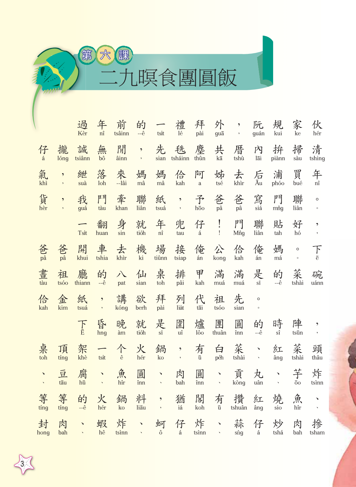
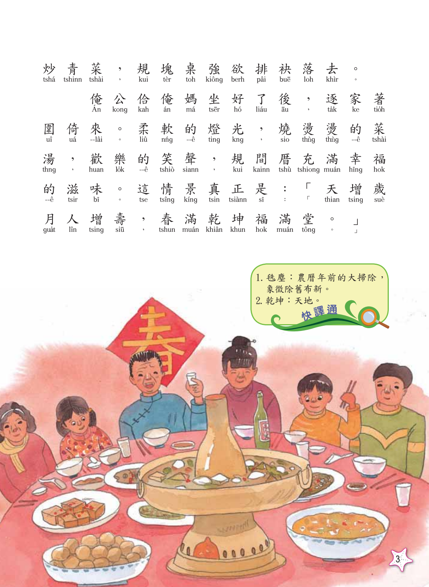
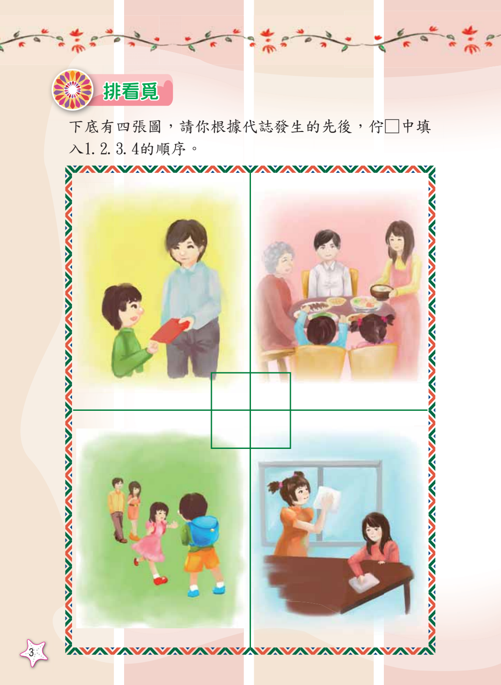
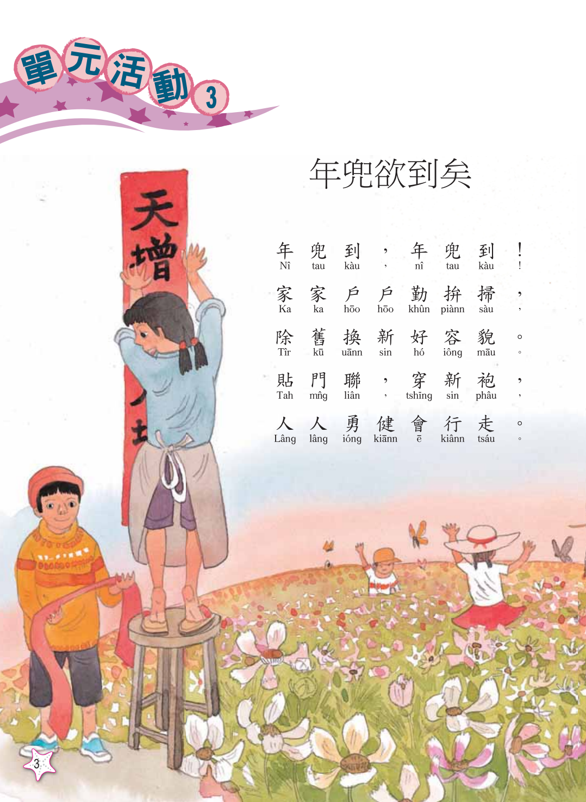
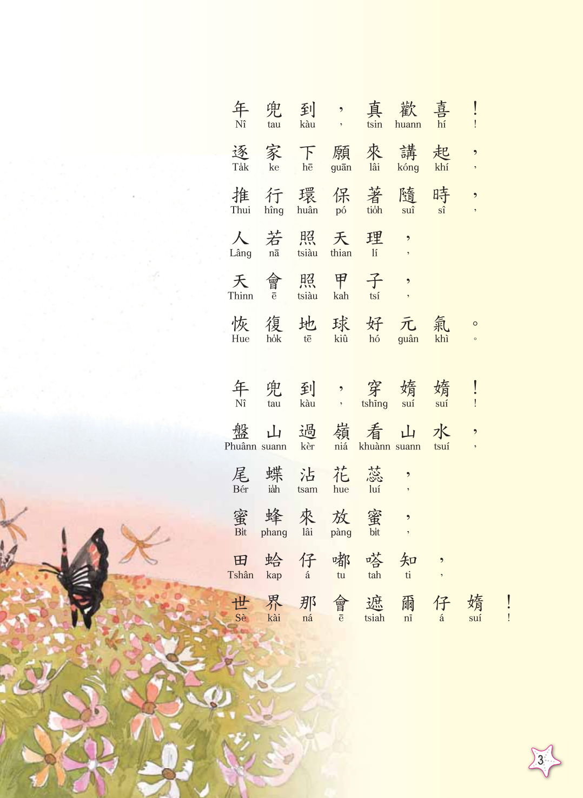
自編練習題
課文描述過年前，家人先進行什麼準備？
- 等所有客人離開
- 把借書丟掉
- 到森林找虎
- 挩塵並把屋內打掃乾淨
正確答案：挩塵並把屋內打掃乾淨
第30頁先寫挩塵與拚掃清氣，再敘述買年貨及寫門聯。
「乾坤」在快譯通中解釋為什麼？
- 天地
- 菜名
- 旗號
- 時間詞
正確答案：天地
第31頁快譯通解釋「乾坤：天地」。
第六課的圍爐場景主要呈現什麼？
- 全家分開各吃各的
- 長輩與家人相聚的幸福
- 比賽誰最晚到
- 只有買年貨的過程
正確答案：長輩與家人相聚的幸福
課文以長輩坐好、大家圍倚來、笑聲與幸福滋味描寫團圓。
〈年兜欲到矣〉除了過年，還提到什麼關懷？
- 只顧穿新衣而不管環境
- 不要觀察自然
- 推行環保並欣賞自然
- 把所有植物搬走
正確答案：推行環保並欣賞自然
第35頁有推行環保、恢復地球元氣及觀察蝴蝶、蜜蜂等內容。